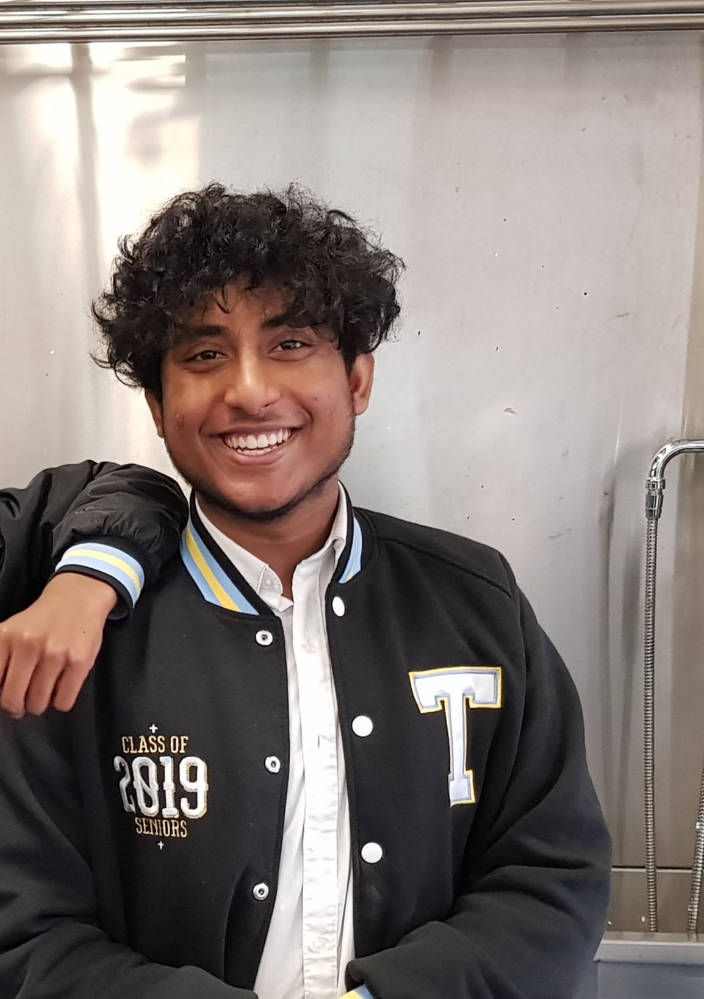
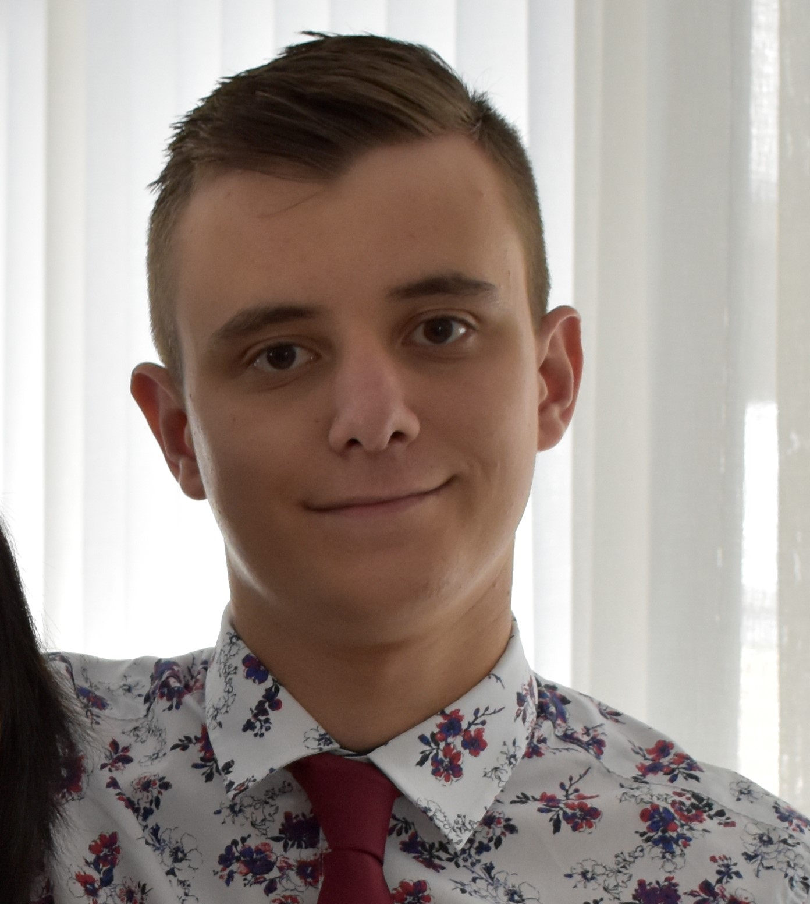
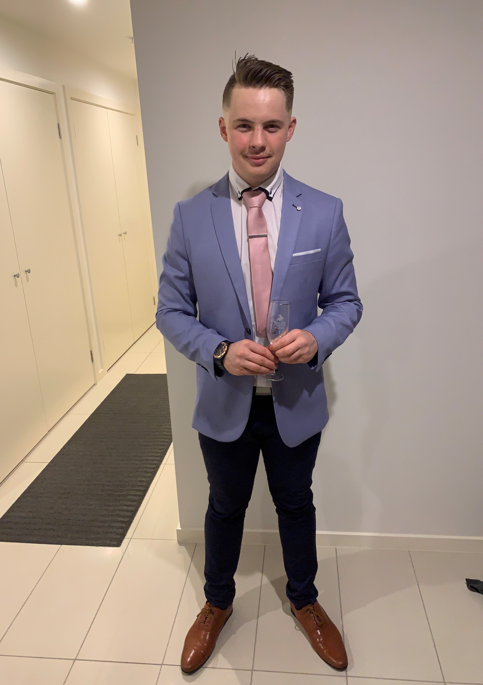

My name is Ahnaf Zaman and I am currently learning the Bachelor of I.T at RMIT. I was born in Bangladesh and
moved to New Zealand when I was 1 year old and then
to Australia at 15 where I graduate year 12. My hobbies include playing video games and going for long walks
at the weekends and I am interested in machine learning
and artificial intelligence as I see that being part of our everyday life in the future and I want to learn
about it in order makes contributions to the field.
I have a few experiences with i.t mainly setting up simple networks and building PC's and have experience
with HTML and CSS as well as python and java.

Student number S3812496. I am born in Australia with one half of my family being born in Argentina. My
hobbies include competitive Counter Strike GO where I play for the
RMIT White CSGO team, my other hobby is riding and working on my motorcycle. My interest in IT is on the
software development / software deployment side. I currently work at an
MSP / Retail store in Bacchus Marsh called MyTech where I have managed the store for 6 months. There I have
installed servers repaired pc's both software and hardware,
and had some experience setting up web hosting for clients including cPanel use.

This role entails helping design and oversee a team that is developing multiple projects in the cloud computing / data center area, as well as upkeep of the final solution once deployed. This job requires the following; 4 or more years of Network and Systems Experience, Strong Knowledge of the Office 365 Suite as well as Exchange, Experience in Systems Engineering design, building, and upkeep, Experience in backup and storage solutions as well as networking experience, Experience in Windows Sever and desktop deployment, security and software development tools, Experience in virtual environments including virtual servers with tools such as VMware and Hyper-V
Hey! My name is James Henderson and I am studying a Bachelor of Information Technology at RMIT university.
My family history consists of 1800s English/Irish settlers migrating to
Byron Bay and settling in Ballarat during the gold rush. I speak a mix of English and Auslan (Australian
sign language) at home with the primary language being English. I graduated
high school last year at CBC St Kilda where I chose Legal Studies, Computing - Informatics, Further
Mathematics, Psychology, English and CISCO Networking as my year 12 subjects.
I am quite passionate about water sports and I regularly partake in hobbies such as swimming, surfing and
lifesaving. I used to play hockey, AFL and chess for my high school's teams and eventually
became an accredited U13s football coach. I have also recently joined the RMIT surfing and ultimate frisbee
clubs.
The role of Cyber Security Analyst for the MFB involves the building and maintaining of a high level of security infrastructure ensuring all security requirements are met for the company. This includes responsibilities such as penetration testing to look for possible vulnerabilities in existing MFB systems, ensuring the MFB is compliant with all relevant security and data privacy standards, being able to work in a specialised team that identifies and eliminates possible external threats to the system and working with other departments to ensure that the relevant security needs are met throughout the entire company. This position is quite appealing to me as it involves my passion for cyber security and penetration testing while also allowing me to make a difference and help others by working in the emergency services department. Knowing the mission and goals of the company that I am working for is something that I value greatly when looking at future career paths and I believe the emergency service departments (especially Ambulance Victoria and MFB) reflect my moral goals of helping others in the community quite well, thus inclining me to choose this job.
Hello, my name is Joshua Kreppold! (student 3838911) I am from the eastern suburbs Melbourne Australia and
am studying a Bachelor of Information technology at RMIT.
I completed year 12 in 2019 at Yarra Hills secondary collage where I've had some IT experience coding. We
worked with php7 and the problem-solving methodology in the IT Software development class.
Programming interests me because of its creative potential, but I am also taken in by User centered design
because of the process of making something usable for other people.
In my spare time I enjoy playing in the Vrl rugby competition with the boys from the Eastern Raptors, and I
also enjoy playing video games when I can.

My name is Julian Chessari and I currently studying a bachelor of information technology at RMIT university.
My background is Italian as my grandparents were born there but then immigrated to Melbourne Australia in
1938, I only speak English though. I graduated Greythorn primary school in 2013 and graduated Balwyn High
School
in 2019 studying English, further mathematics, accounting, economics and legal studies. My main hobbies
include playing games such as counter strike global offensive and rocket league on my PC. I
also play basketball and AFL in my free time either at home or at a park.
The job involves simulating cyber-attacks to inform future vulnerability, to allow for the prevention of that flaw, ensuring the company are complying to relevant data privacy and security standards. To translate risks in the system to the business to ensure prevention work is understood and carried out. To be part of a team that manages a constant monitoring system to ensure the organization is well equipped and prepared to detect, analyse, track and mitigate any external threats and to also work in collaboration with other teams within the company. I find this position appealing because the idea of eliminating external threats to the company seems to be very interesting work and something I might enjoy as a career. A base plan to enter this career would be to first graduate university with a bachelor of Information Technology. I would then try to get a job in Information Security roles, with hopefully involvement in a combination of assurance and risk management, systems design, security operations and auditing, I would try to get at least 5 years' experience in these roles. While doing this I would try get a certification in one or more of the following: CISSP, CEH, CISM, ISO 27001 or CompTia Security+.